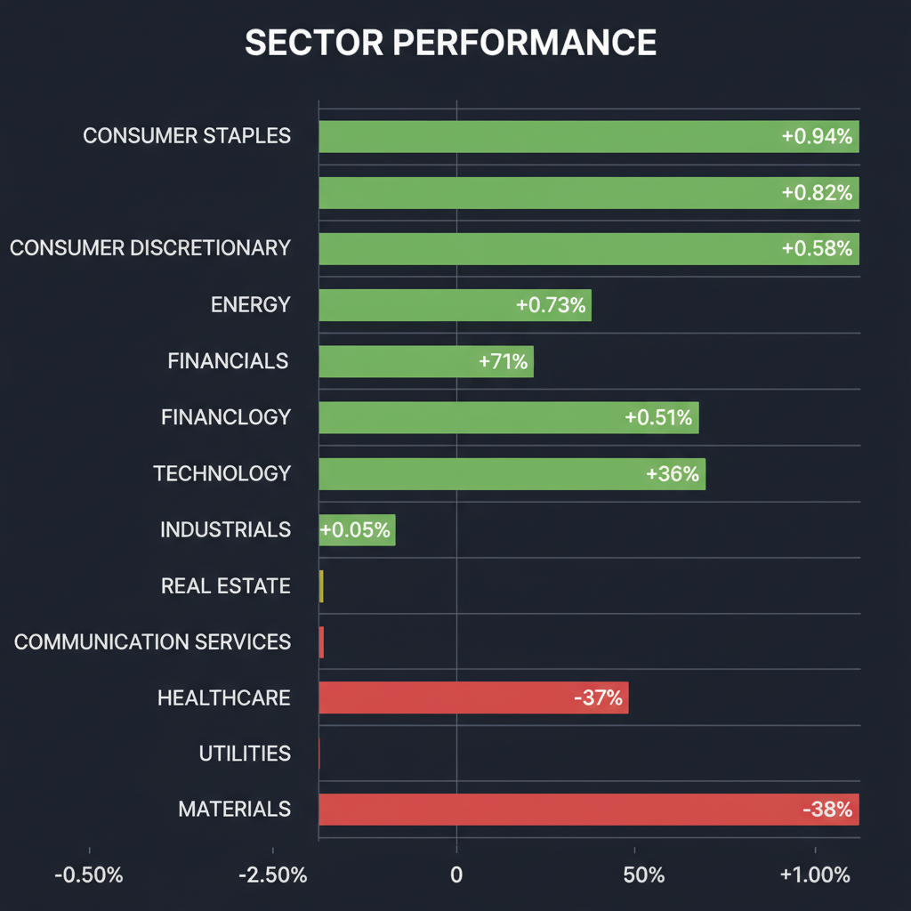
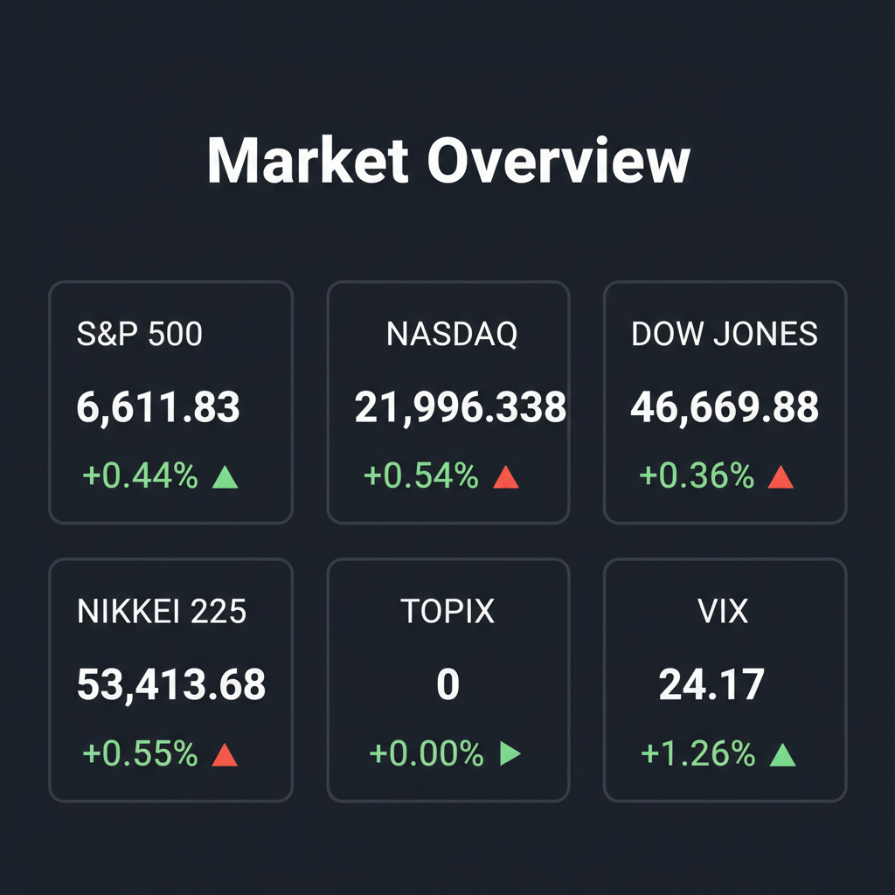

Daily Investment Report - 2026-04-07
Generated: 2026/4/7 8:18:50


投資チームミーティングの分析を統合し、本日の投資家向け最終レポートを作成いたしました。市場の表面的な堅調さに隠れたリスクを浮き彫りにし、直ちに実行可能な戦略を提示しています。
1. エグゼクティブサマリー
- 米国市場は主要指数が堅調に推移する一方で、VIX指数が24.17へ急上昇しており、表面上の株高と裏面のリスクヘッジ（機関投資家の警戒）が混在する極めて危険なダイバージェンス状態にあります。
- 中東の地政学リスク（ホルムズ海峡のLNG輸送停止など）によるエネルギー価格高騰がインフレを再燃させており、「景気減速＋インフレ」というスタグフレーションおよび金利高止まりリスクが急速に高まっています。
- 投資戦略としては、割高な大型AI銘柄への過度な依存を避け、株主還元に積極的な日本の中小型バリュー株やニッチトップ企業へ選別投資を行いつつ、全体的なキャッシュ比率を引き上げて防御を固める局面です。
2. 注目銘柄リスト
市場の盲点となっている中小型株・隠れた成長株を中心に選定しています。
強気（買い推奨）
- トーセイ（8923） [時価総額：約1,000億円規模]: 第1四半期の大幅増益に加え、PER一桁台・PBR1倍強という割安さと高いROEを兼ね備えており、金利上昇局面でも下値不安が極めて限定的なバリュー株です。
- 放電精密加工研究所（6469） [時価総額：数十億円規模]: 航空宇宙・防衛装備品に不可欠な特殊加工技術を持つニッチトップ企業であり、中東の地政学リスクを背景とした防衛需要の拡大テーマに合致します。
- Ｅモーション（情報通信・プロモーション） [時価総額：中小型]: 大幅な増益決算とともに株式分割および増配という積極的な株主還元策を発表しており、初期成長フェーズの強力なモメンタムに乗れる順張り対象です。
中立（様子見）
- ＫＴＫ（3022） [時価総額：約30〜40億円規模]: OA機器から高収益のDX・セキュリティ事業への転換でストップ高を記録しましたが、テクニカル面で短期的には買われすぎ（RSI過熱）水準にあるため、20日移動平均線付近への押し目を待つべきです。
- Owlet（OWLT） [時価総額：小型]: ベビーテック市場でFDA認証という強固な参入障壁を持ち、経営陣交代の悪材料をガイダンス維持で跳ね返しましたが、高金利環境下での赤字グロース株は資金繰りリスクが伴うため、黒字化の道筋をさらに確認する必要があります。
弱気（警戒）
- ブロードコム（AVGO） [時価総額：超大型]: AI半導体需要の恩恵は確実ですが、バリュエーション（PER）が既に高く評価されており、マクロ環境における金利高止まり（マルチプル・コンストラクション）の直撃を受けやすい状態にあります。
- 無配の赤字中小型ハイテク株全般 [時価総額：様々]: インフレ再燃によるFRBの「利下げ先送り・利上げ再開」リスクが高まる中、将来のキャッシュフローに依存する赤字企業のバリュエーションは根底から崩壊する危険があります。
3. セクター推奨ランキング
中東情勢の緊迫化とイランによるホルムズ海峡でのLNGタンカー航行停止により、供給制約による価格上昇プレミアムが期待でき、インフレ再燃に対する最も確実なポートフォリオのヘッジとなります。
KKRなど外資系ファンドによる莫大な含み益を持つ「不動産メタボ企業（サッポロHDなど）」へのアプローチが表面化しており、資本効率の改善や大規模な自社株買いを伴うPBRの水準訂正が期待できます。
地政学リスクの常態化を見据え、金利やマクロ経済の動向に左右されにくい国家的な防衛需要（防衛サプライチェーンの国内回帰）の恩恵を受けるディープテック企業が長期的テーマとなります。
FDAの規制動向等によるボラティリティはありますが、特定のニッチ市場で独自の参入障壁（認証取得など）を持つ企業は、景気減速下でも相対的に底堅い需要を維持します。
3月のサービス部門減速とインフレの再燃は、消費者の購買力低下（実質賃金の目減り）を意味しており、価格転嫁力を持たない消費者向けビジネスは最もマージン圧迫のダメージを受けやすいため回避すべきです。
4. 今週の注目イベント
- 4月7日：日本市場における注目決算発表（パルＨＤ、サンエー、放電精密など計13社）
- 随時：中東情勢のヘッドライン（イスラエル・イラン間の軍事行動、およびホルムズ海峡のLNG・原油タンカーの航行状況）
- 随時：米国のインフレ・サービス業関連指標（FRBの金利政策判断に直結するデータポイント）
5. リスク要因
- VIXの異常値とダイバージェンス：株価指数が最高値圏にあるにもかかわらず、VIX指数が24台へと急騰しており、オプション市場が水面下で急落（テールリスク）に備えている強烈な警告サインです。
- スタグフレーションとFRB利上げ再開リスク：サービス業が冷え込む一方でインフレが過熱しており、JPモルガンCEOが警告するように、FRBが利下げできず「利上げ」に追い込まれる最悪のシナリオが存在します。
- エネルギーのチョークポイント封鎖：イランによるホルムズ海峡の事実上の物流制限が本格化すれば、原油や天然ガス価格が急騰し、世界的なコストプッシュ・インフレを引き起こします。
- AI・大型テック株のバリュエーション崩壊：金利が「より高く、より長く（Higher for Longer）」据え置かれることで、AI熱狂に支えられた高PER株が急激なマルチプル低下（株価急落）に見舞われるリスクがあります。
6. アクションアイテム
- 株式のポジションサイズを直ちに縮小し、ポートフォリオ内のキャッシュ（現金）比率を30〜40%以上に引き上げて流動性を確保する。
- インフレ再燃およびサプライショックへの保険として、エネルギーセクターETF（XLEなど）をポートフォリオに組み入れる、または比率を微増させる。
- 現在保有している、または新規に順張りエントリーする中小型株（Ｅモーション、トーセイなど）については、20日移動平均線や前日安値の直下に「タイトなストップロス（逆指値）」を必ず設定する。
- S&P 500等のファー・アウト・オブ・ザ・マネー（現在価格より低い行使価格）のプットオプション購入を検討し、VIX上昇が示唆する全体市場の暴落（テールリスク）に備える。
- 遠い将来の利益に依存する「高PERの大型テック株（AI関連含む）」や「無配の赤字グロース株」の新規購入を一切見送り、利益確定を進める。